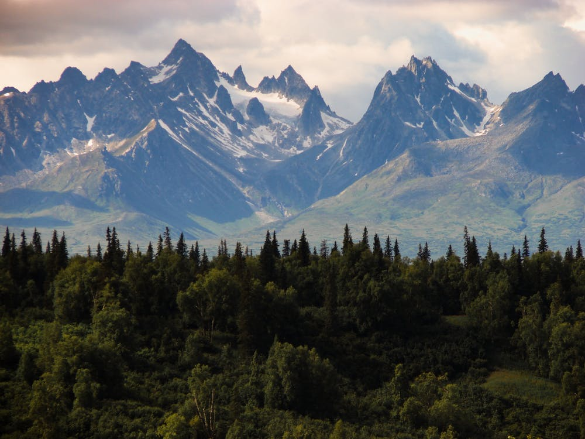
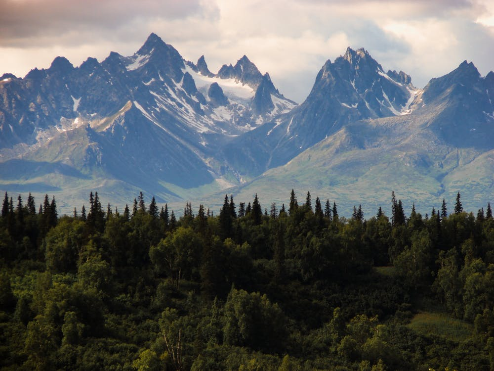

650
HOTELS TO STAY
1200
PLACES TO VISIT
800
REPEAT VISITORS
100%
SAFE & SECURE
Your Bears, Trains and Icebergs adventures starts with a scenic ride
on the Alaska
Railroad's
Glacier Discovery train. The train departs
from the Anchorage Depot located at 411 West
First
Avenue at
9:45am. After traveling through Anchorage you will descend through
the
Anchorage
Coastal Wildlife Refuge.
Your trip includes professional guides, raingear, rubber boots and a
small snack. Dress
warmly in
layers as conditions around the icebergs
can be chilly. Please bring thick socks (to wear
with
provided rubber
boots), warm clothes (wear synthetic layers and bring a rain coat),
warm hat
and gloves. You may wish to bring binoculars and a camera
if you have them.
You can click on the button below or the following link to add Bears,
Train & Icebergs with
Rail to
your My Alaska trip planner where you
can request a reservation or continue to browse for
additional
services. For reservations or additional information you can also call
800-208-0200 or
contact
us online.
HOTELS TO STAY
PLACES TO VISIT
REPEAT VISITORS
SAFE & SECURE

“This was a fantastic experience, we saw so much, the wildlife, the scenery and met interesting people and really got to know Alaska! It really was the best way to see Alaska! We loved getting out onto the glacier with crampons. My daughter loved the ice climbing. Sea kayaking was great. Thank you for a memorable, unique trip! ”

 
